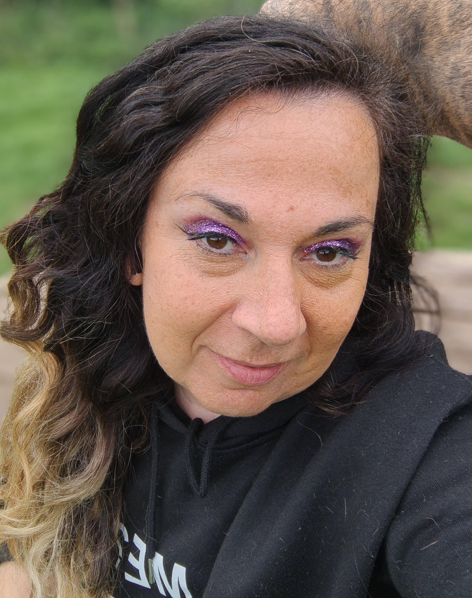

ABOUT MEL
Choral conducting is Mel’s number one passion from The Meltones' fun modern vibe through to Holmes Chapel Singers Classical repertoire. She has 20 years of experience of choral conducting
OTHER WORK
Mel's other jobs include: children’s birthday party Entertainer and can be found doing her best impression of a Mad Scientist or Dance Teacher all over the North West. She is a Fitness Instructor with her favourite class to teach being Spin. She is also a dance teacher at Hen Parties.
More recently she has become an End of Life Doula. This is working at the other end of the Life Spectrum. Doulas work with people at the end of their lives, putting the humanity back into the dying process. She recently started the Cheshire Chapter of the Threshold Choir which involves a small group of singers singing round someone's bedside.
Rather than being depressing work, Mel finds it life-affirming and uplifting being able to walk with people in the final stages of their lives. Mel's latest passion is coding and she built this website herself!